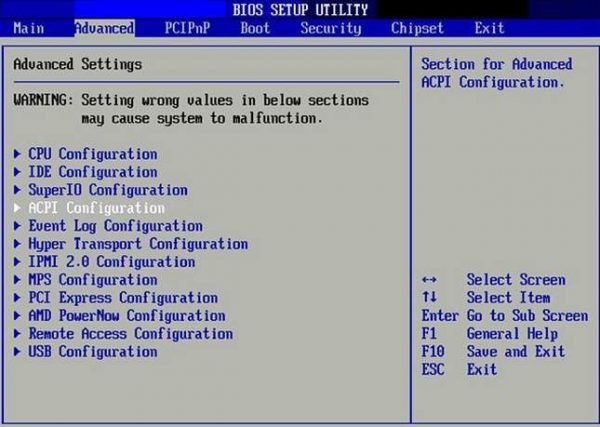
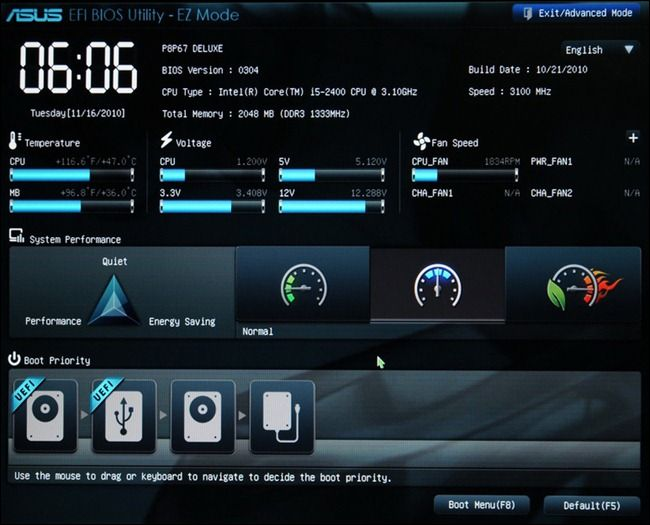
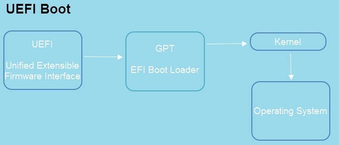
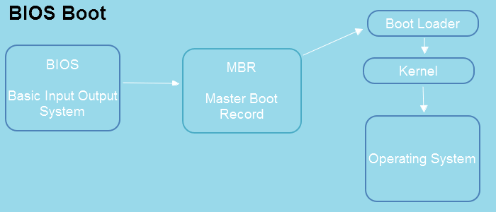

1. UEFI y BIOS: Conceptos y Diferencias
1.1. Introducción al Firmware del Sistema
Todo ordenador necesita un programa básico de bajo nivel capaz de comunicarse directamente con el circuito electrónico antes de que el sistema operativo entre en funcionamiento. Este software fundamental recibe el nombre de firmware.
Tanto la BIOS clásica como la moderna UEFI son dos tipos de firmware de la placa base encargados de definir cómo se enciende el ordenador, qué periféricos se reconocen y desde qué unidad de almacenamiento se inicia el sistema operativo.
1.2. ¿Qué es la BIOS?
BIOS son las siglas de Basic Input-Output System (Sistema Básico de Entrada y Salida). Es un estándar que nació en la década de 1980 junto con los primeros ordenadores personales de IBM.
Aunque recibió mejoras a lo largo del tiempo, la BIOS tradicional presenta serias limitaciones de diseño frente a las necesidades del hardware actual:
- Modo de procesador: Funciona en modo real de 16 bits, lo que limita gravemente la potencia de cálculo durante el arranque.
- Memoria limitada: Dispone únicamente de 1 MB de espacio de direccionamiento para ejecutar su código y cargar controladores.
- Inicialización secuencial: Inicializa el hardware dispositivo a dispositivo de forma consecutiva, lo que provoca un proceso de encendido perceptiblemente más lento.
- Límite de almacenamiento (Esquema MBR): La BIOS depende obligatoriamente del registro maestro de arranque o MBR (Master Boot Record). El particionado MBR emplea campos de 32 bits con sectores de 512 bytes, lo que impone un límite matemático de 2,2 TB: $$2^{32} \times 512\text{ bytes} \approx 2,19\text{ TB}$$ Si se conecta un disco duro de mayor capacidad (por ejemplo, 3 TB o más), la BIOS no puede gestionar el espacio sobrante para arrancar.
- Interfaz: Se maneja a través de una pantalla de solo texto y se controla exclusivamente mediante el teclado (flechas de cursor y teclas de función).

1.3. ¿Qué es la UEFI?
UEFI son las siglas de Unified Extensible Firmware Interface (Interfaz de Firmware Extensible Unificada). Es un estándar moderno promovido por un consorcio de fabricantes (Intel, AMD, Microsoft, ASUS, MSI, Gigabyte, etc.) que comenzó a sustituir progresivamente a la BIOS heredada a partir de 2005.

Principales avances de UEFI
- Interfaz gráfica amigable: Proporciona un entorno visual (GUI) de alta resolución con tipografías claras, indicadores analógicos de monitorización y soporte nativo de ratón.
- Arquitectura de 32 y 64 bits: El código de UEFI está escrito principalmente en lenguaje C (en lugar de ensamblador) y se ejecuta en modo nativo de 32 o 64 bits, acelerando la inicialización en paralelo de componentes.
- Soporte de grandes unidades con GPT: Utiliza la tabla de particiones GPT (GUID Partition Table), lo que permite superar el límite de 2,2 TB y gestionar unidades de almacenamiento de hasta 9,4 ZB (zetabytes), además de admitir más de 128 particiones primarias.
- Partición del Sistema EFI (ESP): La UEFI no almacena los cargadores de arranque en sectores ocultos del disco; en su lugar, utiliza una partición estándar formateada en FAT32 llamada ESP (EFI System Partition), donde residen ejecutables con extensión
.efi. - Funciones de red nativas: Es capaz de cargar una pila TCP/IP sin necesidad de sistema operativo, permitiendo diagnósticos remotos y actualizaciones de firmware a través de Internet.
- Módulo de compatibilidad CSM (Compatibility Support Module): Permite emular el comportamiento de una BIOS tradicional para arrancar sistemas antiguos instalados bajo esquemas MBR.
1.4. El Flujo de Arranque: BIOS (MBR) vs. UEFI (GPT)
La diferencia fundamental entre ambas soluciones radica en el mecanismo utilizado para ceder el control al sistema operativo:
- En la BIOS clásica: Tras completar el chequeo del hardware, la BIOS lee el primer sector físico del disco (el sector 0, donde reside el MBR) para localizar el código de arranque (Boot Loader) y cargar el núcleo (Kernel).
- En la UEFI moderna: La UEFI lee directamente el sistema de ficheros de la partición GPT, busca el gestor de arranque en la partición ESP y ejecuta el cargador EFI para iniciar el kernel.

